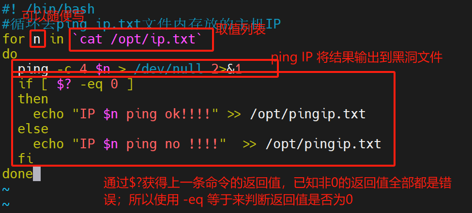
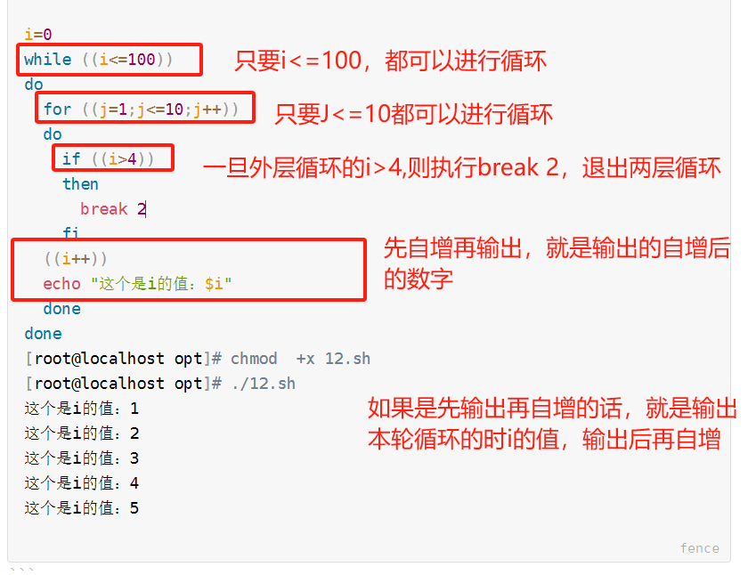

一、shell 分类
1.1 sh
1.2 csh
- sh之后比较流行shell，这个语法有点类似C语言， 名称 C shell ，简称csh
1.3 bash
二、Shell脚本
[root@localhost opt]# vim 1.sh
#! /bin/bash
echo "双休好短暂，还没过够呢！！！！"
三、执行shell脚本
[root@localhost opt]# chmod +x 1.sh
[root@localhost opt]# ll
总用量 4
-rwxr-xr-x 1 root root 66 3月 29 02:04 1.sh
3.2 执行脚本(1)
[root@localhost opt]# ./1.sh
双休好短暂，还没过够呢！！！！
[root@localhost opt]# . 1.sh
双休好短暂，还没过够呢！！！！
[root@localhost opt]# sh 1.sh
双休好短暂，还没过够呢！！！！
[root@localhost opt]# source 1.sh
双休好短暂，还没过够呢！！！！
3.2 使用/bin/bash执行脚本
[root@localhost opt]# /bin/bash 1.sh
双休好短暂，还没过够呢！！！！
[root@localhost opt]# /bin/bash /opt/1.sh
双休好短暂，还没过够呢！！！！
3.3 使用bash来执行脚本
[root@localhost opt]# bash 1.sh
双休好短暂，还没过够呢！！！！
3.4 使用新进程
[root@localhost opt]# echo $$
61520
[root@localhost opt]# vim check.sh
#! /bin/bash
echo $$
[root@localhost opt]# chmod +x check.sh
[root@localhost opt]# ./check.sh
77208
[root@localhost opt]# bash check.sh
77450
[root@localhost opt]# /bin/bash check.sh
77499
四、shell的变量
- 变量是任何一个编程语言不可缺少的一部分，脚本语言在定义变量的时候不需要指明类型，直接赋值就行
4.1 定义变量
变量名=变量值
sum=0
name='zhangsan'
name="李四"
4.2 使用变量
[root@localhost opt]# vim bl.sh
#! /bin/bash
name="zhangsan"
echo name
echo $name
[root@localhost opt]# . bl.sh
name
zhangsan
4.3 修改变量值
[root@localhost opt]# cat bl.sh
#! /bin/bash
name="zhangsan"
echo $name
name="lisi"
echo $name
[root@localhost opt]# . bl.sh
zhangsan
lisi
4.4 单引号和双引号的区别
[root@localhost opt]# vim cs.sh
#! /bin/bash
url="http://baidu.com"
myweb01='搜索引擎:${url}'
myweb02="搜索引擎:${url}"
echo $myweb01
echo $myweb02
[root@localhost opt]# chmod +x cs.sh
[root@localhost opt]# ./cs.sh
搜索引擎:${url}
搜索引擎:http://baidu.com
4.5 把命令的结果赋值给变量
#! /bin/bash
yw=$(cat /etc/passwd) #较为推荐使用这种方式
echo $yw
yw1=`cat /etc/passwd`
echo $yw1
4.6 只读变量
[root@localhost opt]# cat bl.sh
#! /bin/bash
name="zhangsan"
echo $name
readonly name
name="lisi"
echo $name
[root@localhost opt]# ./bl.sh
zhangsan
./bl.sh:行5: name: 只读变量
zhangsan
4.7 删除变量
[root@localhost opt]# cat bl.sh
#! /bin/bash
name="zhangsan"
echo $name
unset name
echo $name
[root@localhost opt]# ./bl.sh
zhangsan
五、位置参数
[root@localhost opt]# cat wzbl.sh
#! /bin/bash
echo "欢迎回家：$1"
echo "今天晚上吃：$2"
[root@localhost opt]# chmod +x wzbl.sh
[root@localhost opt]# ./wzbl.sh
欢迎回家：
今天晚上吃：
[root@localhost opt]# ./wzbl.sh 李贺 烤全羊
欢迎回家：李贺
今天晚上吃：烤全羊
[root@localhost opt]#
六、字符串
6.1 字符串边界符
[root@localhost opt]# vim cs.sh
#! /bin/bash
url="http://baidu.com"
myweb01='搜索引擎:${url}'
myweb02="搜索引擎:${url}"
echo $myweb01
echo $myweb02
[root@localhost opt]# chmod +x cs.sh
[root@localhost opt]# ./cs.sh
搜索引擎:${url}
搜索引擎:http://baidu.com
6.2 字符串转义
[root@localhost opt]# vim 3.sh
#! /bin/bash
a="明天咱们都会中奖"一百万""
echo $a
[root@localhost opt]# chmod +x 3.sh
[root@localhost opt]# ./3.sh
明天咱们都会中奖一百万
-------------------------------------------------------------
[root@localhost opt]# cat 3.sh
#! /bin/bash
a="明天咱们都会中奖\"一百万\""
echo $a
echo "这个使用的字符串长度是：${#a}"
[root@localhost opt]# ./3.sh
明天咱们都会中奖"一百万"
这个使用的字符串长度是：13
"一百万"
6.3 字符串拼接
[root@localhost opt]# cat 4.sh
#! /bin/bash
a="今天"
b="天气"
c="阴天"
A=$a$b$c
B=$b$c$a
echo $A
echo $B
[root@localhost opt]# chmod +x 4.sh
[root@localhost opt]# ./4.sh
今天天气阴天
天气阴天今天
6.4 字符串截取
6.4.1 从字符串左边开始计数
${变量：start：length}
start是从0开始计算
[root@localhost opt]# vim 5.sh
[root@localhost opt]# cat 5.sh
#! /bin/bash
url="www.baidu.com"
echo $url
echo ${url:2:9}
echo ${url:3:9}
[root@localhost opt]# chmod +x 5.sh
[root@localhost opt]# ./5.sh
www.baidu.com
w.baidu.c
.baidu.co
6.4.2 从字符串右边开始计算
${变量：0-start：length}
[root@localhost opt]# cat 5.sh
#! /bin/bash
url="www.baidu.com"
echo $url
echo ${url:2:9}
echo ${url:3:9}
echo =================================
echo ${url:0-13:9}
echo ${url:0-13}
[root@localhost opt]# ./5.sh
www.baidu.com
w.baidu.c
.baidu.co
=================================
www.baidu
www.baidu.com
6.4.3 从指定字符开始截取
6.4.3.1 截取右边的字符串
${变量#*chars}
[root@localhost opt]# cat 6.sh
#! /bin/bash
url="http://www.baidu.com/book/index.html"
echo ${url#*:} #从左向右进行匹配，匹配到第一个冒号开始截取右边的字符串
echo ${url#*/} #从左向右进行匹配匹配到第一个/开始截取右边的字符串
echo ${url##*/} #从左向右进行匹配，匹配到最后一个/开始截取右边的字符串
echo ${url#*w} ##从左向右进行匹配，匹配到第一个w开始截取右边的字符串
[root@localhost opt]# ./6.sh
//www.baidu.com/book/index.html
/www.baidu.com/book/index.html
index.html
ww.baidu.com/book/index.html
6.4.3.2 截取左边的字符串
${变量%chars*}
[root@localhost opt]# cat 6.sh
#! /bin/bash
url="http://www.baidu.com/book/index.html"
echo ${url%:*} #从右向左匹配，匹配到第一个冒号截取左边的字符串
echo ${url%/*} #从右向左匹配，匹配到第一个/，截取左边的字符串
echo ${url%%/*} ##从右向左匹配，匹配到最后一个/，截取左边的字符串
[root@localhost opt]# ./6.sh
http
http://www.baidu.com/book
http:
七、特殊变量
| 变量 |
含义 |
| $? |
栅格命令的推出状态，可以获得文件和函数的返回值，0是成功，非0失败 |
| $0 |
当前脚本的文件名 |
| $$ |
显示当前shell的进程ID，（对于shell脚本来说，这个就是这些脚本所在的进程ID） |
| $n |
位置变量，传递给执行脚本参数位置 |
| $# |
传递给脚本或者函数的参数个数 |
| $* |
传递给脚本或者函数所有的参数 |
| $@ |
传递给脚本或者函数所有的参数：在被引号引起来的时候，@和*是有不同的 |
#~ /bin/bash
echo "id: $$"
echo "file name: $0"
echo "par one: $1"
echo "par two: $2"
echo "所有参数@: $@"
echo "所有参数*: $*"
echo "变量个数#: $#"
[root@localhost opt]# sh al.sh aa ll
id: 1597
file name: al.sh
par one: aa
par two: ll
所有参数@: aa ll
所有参数*: aa ll
变量个数#: 2
7.1*和@的区别
[root@localhost opt]# cat xa.sh
#! /bin/bash
echo "这个是\"$*\"的脚本"
for var in "$*"
do
echo "$var"
done
[root@localhost opt]# sh xa.sh 张飞 赵云 关羽
这个是"张飞 赵云 关羽"的脚本
张飞 赵云 关羽 #看做了一个数据
[root@localhost opt]# cat xa.sh
#! /bin/bash
echo "这个是\"$@\"的脚本"
for var in "$@"
do
echo "$var"
done
[root@localhost opt]# sh xa.sh 张飞 赵云 关羽
这个是"张飞 赵云 关羽"的脚本
张飞
赵云 #没一行都是一个数据
关羽
八、数组
- 和其他编程语言一样的，都是支持数组（若干数据的集合）
8.1shell数组的定义方式
arry_name=(q1 q2 q3 q4.....)
- shell是一个弱类型，所以他对变量值是没有要求的
[root@localhost opt]# cat sh.sh
#! /bin/bash
nums=(10 20 30 40 50 60)
nums2=(zhangsan lisi wangwu zhaoliu)
echo "输出数组的所有值"
echo ${nums[*]}
echo ${nums[@]}
echo "输出数组内的某一个数据"
n=${nums[2]}
m=${nums2[0]}
echo "输出变量N的值:$n"
echo "输出数组nums内的第三个元素${nums[2]}"
echo "输出变量M的值:$m"
[root@localhost opt]# sh sh.sh
输出数组的所有值
10 20 30 40 50 60
10 20 30 40 50 60
输出数组内的某一个数据
输出变量N的值:30
输出数组nums内的第三个元素30
输出变量M的值:zhangsan
8.2获得数组的长度
[root@localhost opt]# cat sh.sh
#! /bin/bash
nums=(10 20 30 40 50 60)
nums2=(zhangsan lisi wangwu zhaoliu)
echo "输出数组的所有值"
echo ${nums[*]}
echo ${nums[@]}
echo "输出数组内的某一个数据"
n=${nums[2]}
m=${nums2[0]}
echo "输出变量N的值:$n"
echo "输出数组nums内的第三个元素${nums[2]}"
echo "输出变量M的值:$m"
echo "输出数组的长度: ${#nums[*]}"
echo "输出数组的长度: ${#nums[@]}"
[root@localhost opt]# sh sh.sh
输出数组的所有值
10 20 30 40 50 60
10 20 30 40 50 60
输出数组内的某一个数据
输出变量N的值:30
输出数组nums内的第三个元素30
输出变量M的值:zhangsan
输出数组的长度: 6
输出数组的长度: 6
8.3删除数组内的元素
[root@localhost opt]# cat sh.sh
#! /bin/bash
nums=(10 20 30 40 50 60)
nums2=(zhangsan lisi wangwu zhaoliu)
echo "输出数组的所有值"
echo ${nums[*]}
echo ${nums[@]}
echo "输出数组内的某一个数据"
n=${nums[2]}
m=${nums2[0]}
echo "输出变量N的值:$n"
echo "输出数组nums内的第三个元素${nums[2]}"
echo "输出变量M的值:$m"
echo "输出数组的长度: ${#nums[*]}"
echo "输出数组的长度: ${#nums[@]}"
echo "删除数组内的元素"
unset nums[1]
echo ${nums[*]}
unset nums[5]
echo ${nums[*]}
echo ${#nums[*]}
[root@localhost opt]# sh sh.sh
输出数组的所有值
10 20 30 40 50 60
10 20 30 40 50 60
输出数组内的某一个数据
输出变量N的值:30
输出数组nums内的第三个元素30
输出变量M的值:zhangsan
输出数组的长度: 6
输出数组的长度: 6
删除数组内的元素
10 30 40 50 60
10 30 40 50
4
8.4 数组的拼接
[root@localhost opt]# cat 5.sh
#! /bin/bash
A=(1 2 3)
B=(a b c)
echo "直接拼接两个数组"
C="${A[*]} ${B[@]}"
echo $C
[root@localhost opt]# ./5.sh
直接拼接两个数组
1 2 3 a b c
[root@localhost opt]# cat 5.sh
#! /bin/bash
A=(1 2 3)
B=(a b c)
echo "直接拼接两个数组"
C="${A[*]} ${B[@]}"
echo $C
echo "数组的交替拼接"
aa="${A[0]} ${B[0]} ${B[2]} ${A[1]}"
echo $aa
[root@localhost opt]# ./5.sh
直接拼接两个数组
1 2 3 a b c
数组的交替拼接
1 a c 2
8.5 关联数组
-
关联数组是以key和value进行组合
-
关联的key不能重复！！！！！！！！
[root@localhost opt]# cat 6.sh
#! /bin/bash
declare -A pam
pam[name]="zhangsan"
pam[age]="18"
pam[addr]="北京颐和园"
echo "${pam[name]}马上放学了"
echo "${pam[name]}今年刚满${pam[age]}岁"
echo "${pam[name]}住在${pam[addr]}"
[root@localhost opt]# chmod +x 6.sh
[root@localhost opt]# ./6.sh
zhangsan马上放学了
zhangsan今年刚满18岁
zhangsan住在北京颐和园
#! /bin/bash
declare -A pam
pam[name]="$1"
pam[age]="18"
pam[addr]="北京颐和园"
echo "${pam[name]}马上放学了"
echo "${pam[name]}今年刚满${pam[age]}岁"
echo "${pam[name]}住在${pam[addr]}"
echo "统计关联数组内的所有key键"
echo ${!pam[@]}
echo ${!pam[*]}
echo "显示数组内的所有元素"
echo ${pam[@]}
echo ${pam[*]}
echo "显示数组长度"
echo ${#pam[*]}
echo ${#pam[@]}
[root@localhost opt]# ./6.sh zz
zz马上放学了
zz今年刚满18岁
zz住在北京颐和园
统计关联数组内的所有key键
name age addr
name age addr
显示数组内的所有元素
zz 18 北京颐和园
zz 18 北京颐和园
显示数组长度
3
3
九、read 命令
- read的作用：从标准输入中读取数据并且赋值给变量
9.1 read的命令格式
read [选项] [变量]
9.2 read 选项
| 选项 |
说明 |
| -p |
显示提示信息 |
| -n |
读取多少字符，不是整行提取 |
| -a |
把读取到的内容赋值给数组，下标还是从0开始的 |
| -t |
设置输入的超时时间；如果一会再指定时间没人输入，那么read会返回0的退出状态 |
| -s |
静默模式，不会在屏幕上显示输入的字符 |
#! /bin/bash
read -p "请输入你登录账号：" name
read -p "请输入你的登录密码：" passwd
read -p "请输入你要登录的网址：" url
echo "欢迎${name}登录${url},您的登录密码是${passwd}"
[root@localhost opt]# ./7.sh
请输入你登录账号：巴啦啦
请输入你的登录密码：123456
请输入你要登录的网址：www.baidu.com
欢迎巴啦啦登录www.baidu.com,您的登录密码是123456
[root@localhost opt]# cat 7.sh
#! /bin/bash
read -n 3 -p "请输入你登录账号：" name #只能输入三个字符
read -t 10 -sp "请输入你的登录密码：" passwd #超过10秒跳过，静默模式
read -p "请输入你要登录的网址：" url
echo "欢迎${name}登录${url},您的登录密码是${passwd}"
[root@localhost opt]# ./7.sh
请输入你登录账号：123请输入你的登录密码：请输入你要登录的网址：aaa
欢迎123登录aaa,您的登录密码是123
[root@localhost opt]# cat 8.sh
#! /bin/bash
read -a name
echo ${name[*]}
echo ${name[1]}
[root@localhost opt]# ./8.sh
1 2 3 4 5 6 7 8
1 2 3 4 5 6 7 8
2
9.3 验证&& 的作用
#! /bin/bash
if
read -t 8 -sp "请输入你的密码：" passwd1 &&
printf "\n" &&
read -t 8 -sp "请确认你的密码：" passwd2 &&
printf "\n" && (($passwd1==$passwd2))
then
echo "密码创建成功"
else
echo "密码不一致，请核实密码"
fi
[root@localhost opt]# chmod +x 9.sh
[root@localhost opt]# ./9.sh
请输入你的密码：
请确认你的密码：
密码不一致，请核实密码
[root@localhost opt]# ./9.sh
请输入你的密码：
请确认你的密码：
密码创建成功
9.4 验证|| 的作用
#! /bin/bash
if
read -t 8 -sp "请输入你的密码：" passwd1 ||
printf "\n" ||
read -t 8 -sp "请确认你的密码：" passwd2 ||
printf "\n" || (($passwd1==$passwd2))
then
echo "密码创建成功"
else
echo "密码不一致，请核实密码"
fi
[root@localhost opt]# ./9.sh
请输入你的密码：密码创建成功
9.5 exit 退出
-
exit 也shell的内建命令，用来退出当前是shell进程，并且返回一个退出状态，可以使用$?获取推出值
-
exit可以接受一个整数值作为参数，代表退出状态，默认是0
-
exit退出状态是一个介于0-255直接的整数，其中只有0是代表成功，其他都是失败
[root@localhost opt]# cat 10.sh
#! /bin/bash
echo "1111111"
exit 10
echo "222222"
十、declare
- declare是shell的内建命令，作用是用来设置变量的属性
10.1 选项
| 选项 |
含义 |
| -A |
声明变量为关联数组 |
| -i |
声明变量为整数 |
| -r |
声明变量为只读 |
| -a |
声明变量为普通数组 |
| -g |
再shell函数内部创建全部变量 |
#声明变量为整数
[root@localhost opt]# cat 11.sh
#! /bin/bash
declare -i a b c
a=10
b=30
c=$a+$b
echo $c
[root@localhost opt]# ./11.sh
40
[root@localhost opt]# cat 11.sh
#! /bin/bash
declare -i a b c
a=10
b=30
c=$a+$b
echo $c
declare -r a=10
a=85
c=$a+$b
echo $c
[root@localhost opt]# ./11.sh
40
./11.sh:行8: a: 只读变量
40
十一、数学运算符
| 运算符 |
含义 |
| +、- |
|
| =、==、！= |
赋值、等于、不等于 |
| *、/、% |
乘、除、取模 |
| ** |
幂运算 |
| ++、-- |
自增、自减 |
|
、&&、！ |
| <、>、<= 、>=、 |
|
| << 、>> |
想左移位，像右移位 |
| +=、-=、/=、= |
+=（a=a+1 a+=1） |
-eq 等于
-ne 不等于
-gt 大于
-lt 小于
-le 小于等于
-ge 大于等于
| 运算操作符 |
说明 |
| (()) |
用于整数计算，效率比较高，推荐使用 |
| $[] |
用于整数计算,不如(())灵活 |
| let |
用于整数计算，和(())很像 |
| declare -i |
把变量设置为整数，就可以直接运算 |
判断的时候返回的0和1是布尔值
就是判断真假
如果判断条件为真，则返回值为0
如果判断条件为假的话则返回值为1
[root@localhost opt]# echo $((8+10))
18
[root@localhost opt]# echo $((8-10))
-2
[root@localhost opt]# echo $((8/10))
0
[root@localhost opt]# echo $((8>10))
0
[root@localhost opt]# echo $((8<10))
1
十二、判断语句--if
12.1 if 单分支语句格式
if 条件
then
结果
fi
if 条件;then
结果
fi
[root@localhost opt]# cat 1.sh
#! /bin/bash
read -p "输入你的姓名：" name
read -p "输入你的年纪：" age
read -p "请输入你的智商" iq
if (($age>18 || $iq<60))
then
echo "$name,你可长点心吧"
fi
[root@localhost opt]# chmod +x 1.sh
[root@localhost opt]# ./1.sh #两个条件都不满足，就会判断为假不会输出内容
输入你的姓名：zhangsan
输入你的年纪：10
请输入你的智商80
#二者条件，只要由一个满足就会判断为真，会执行then内容
[root@localhost opt]# ./1.sh
输入你的姓名：zhangsan
输入你的年纪：20
请输入你的智商:0
zhangsan,你可长点心吧
[root@localhost opt]# ./1.sh
输入你的姓名：zhangsan
输入你的年纪：10
请输入你的智商:59
zhangsan,你可长点心吧
12.2 if 双分支语句--if else
if 条件
then
结果
else
结果
fi
[root@localhost opt]# cat 1.sh
#! /bin/bash
read -p "输入你的姓名：" name
read -p "输入你的年纪：" age
read -p "请输入你的智商:" iq
if (($age>18 || $iq<60))
then
echo "$name,你可长点心吧"
else
echo "$name,你没有满足我们的条件，拉到吧"
fi
[root@localhost opt]# ./1.sh
输入你的姓名：zhangsan
输入你的年纪：10
请输入你的智商:180
zhangsan,你没有满足我们的条件，拉到吧
判断张三的年纪，如果成年了就提示：欢迎进入网吧，注意自己的贵重物品；如果没有成年，就提示：回家写作业，等成年了再说
[root@localhost opt]# ./2.sh
请输入你的姓名：a
请输入你的年纪：18
欢迎a进入网吧，注意自己的贵重物品
[root@localhost opt]# cat 2.sh
#! /bin/bash
read -p "请输入你的姓名：" name
read -p "请输入你的年纪：" age
if (($age>=18))
then
echo "欢迎$name进入网吧，注意自己的贵重物品"
else
echo "回家写作业，等成年了再说"
fi
12.3 if多分支-if、elif、else
if 条件
then
结果
elif 条件2
then
结果
elif 条件3
then
结果
……
else
结果
fi
#！ /bin/bash
#判断考试成绩
read -p "输入你的考试成绩（1-100）" aa
if (($aa>=90))&& (($aa<=100))
then
echo "你的成绩为$aa分，恭喜你考试成绩优秀"
elif (($aa>=80)) && (($aa<=89))
then
echo "你的成绩为$aa分，恭喜你考试成绩不错"
elif (($aa>=70)) && (($aa<=79))
then
echo "你的成绩为$aa分，考试成绩很不错，继续努力超过80分"
elif (($aa>=60)) && (($aa<=69))
then
echo "你的成绩为$aa分，及格啦，下次继续努力超过70分"
else
echo "你的成绩为$aa分，不及格准备补考吧"
fi
[root@localhost opt]# chmod +x 3.sh
[root@localhost opt]# ./3.sh
输入你的考试成绩（1-100）1000
你的成绩为1000分，不及格准备补考吧
[root@localhost opt]# ./3.sh
输入你的考试成绩（1-100）55
你的成绩为55分，不及格准备补考吧
[root@localhost opt]# ./3.sh
输入你的考试成绩（1-100）77
你的成绩为77分，考试成绩很不错，继续努力超过80分
十三、while 循环
while 条件
do
执行命令
done
#! /bin/bash
#计算1-100的总和
i=1
sum=0
while ((i<=100))
do
((sum=sum+i))
((i++))
done
echo "总和：$sum"
[root@localhost opt]# ./4.sh
总和：5050
[root@localhost opt]# cat 5.sh
#! /bin/bash
while true
do
read -p "输入成绩（1-100）" vava
if (($vava<60))
then
echo "没及格"
elif (($vava >=60)) && (($vava<=80))
then
echo "良好"
elif (($vava >80)) && (($vava<=100))
then
echo "优秀"
else
echo "请输入正确的成绩"
fi
done
[root@localhost opt]# ./5.sh
输入成绩（1-100）10
没及格
输入成绩（1-100）20
没及格
输入成绩（1-100）60
良好
输入成绩（1-100）80
良好
输入成绩（1-100）81
优秀
输入成绩（1-100）
要求：利用while创建10个文件，文件名是a1.txt-a10.txt
#! /bin/bash
i=0
while ((i<10))
do
touch $i.TXT
((i++))
done
0-9
#! /bin/bash
i=0
while ((i<10))
do
((i++))
touch $i.TXT
done
结果：1-10
流程：
1.i=0，满足条件；先做自增：i=i+1=1,然后去创建文件
2.i=1,满足条件：先做自增：i=i+1=2,然后去创建文件
3.i=2,满足条件：先做自增：i=i+1=3,然后去创建文件
4.i=3,满足条件：先做自增：i=i+1=4,然后去创建文件
5.i=4,满足条件：先做自增：i=i+1=5,然后去创建文件
6.i=5,满足条件：先做自增：i=i+1=6,然后去创建文件
7.i=6,满足条件：先做自增：i=i+1=7,然后去创建文件
8.i=7,满足条件：先做自增：i=i+1=8,然后去创建文件
9.i=8,满足条件：先做自增：i=i+1=9,然后去创建文件
10.i=9,满足条件：先做自增：i=i+1=10,然后去创建文件
11.i=10,不满足条件：
10<10 不小于，不符合条件
十四、[] &[[]]
#! /bin/bash
#判断成绩
read -p "成绩（1-100）" vava
if [ $vava -ge 90 ] && [ $vava -le 100 ]
then
echo "成绩优秀"
elif [ $vava -ge 80 ] && [ $vava -le 89 ]
then
echo "成绩偏优"
elif [ $vava -ge 60 ] && [ $vava -le 79 ]
then
echo "成绩良好"
else
echo "不合格"
fi
[root@localhost opt]# chmod +x 1.sh
[root@localhost opt]# ./1.sh
成绩（1-100）100
成绩优秀
[root@localhost opt]# cat 2.sh
#! /bin/bash
st1=aa
st2=bb
echo "判断是否相同"
[[ $st1 == $st2 ]] && echo true || echo false
echo "判断是否不同"
[[ $st1 != $st2 ]] && echo true || echo false
echo "判断字符是否是空"
[[ -z $st1 ]] && echo true || echo false
echo "判断字符是否不为空"
[[ -n $st1 ]] && echo true ||echo false
[root@localhost opt]# chmod +x 2.sh
[root@localhost opt]# ./2.sh
判断是否相同
false
判断是否不同
true
判断字符是否是空
false
判断字符是否不为空
true
十五、case in
case 表达式 in
模式1)
执行语句
;;
模式2)
执行语句
;;
模式3)
执行语句
;;
模式4)
执行语句
;;
……)
执行语句
;;
*)
执行语句
esac
#! /bin/bash
#通过数字，判断今天周几
read -p "请输入数字（1-7）：" num
case $num in
1)
echo "今天是周一"
;;
2)
echo "今天是周二"
;;
3)
echo "今天是周三"
;;
4)
echo "今天是周四"
;;
5)
echo "今天是周五"
;;
6)
echo "今天是周六"
;;
7)
echo "今天是周日"
;;
*)
echo "请输入正确的数字"
esac
[root@localhost opt]# chmod +x 1.sh
[root@localhost opt]# ./1.sh
请输入数字（1-7）：7
今天是周日
[root@localhost opt]# ./1.sh
请输入数字（1-7）：0
请输入正确的数字
15.1 case in 支持正则表示式
[root@localhost opt]# cat 2.sh
#! /bin/bash
read -n 1 -p "请输入一个字符" char
case $char in
[a-zA-Z])
echo "这个$char是字母"
;;
[0-9])
echo "这个$char是数字"
;;
[..?])
echo "这个是特殊符号"
;;
*)
echo "请输入正确的字符"
esac
[root@localhost opt]# ./2.sh
请输入一个字符a这个a是字母
"请输入正确的字符"
通过case in 语句判断用户输入的月份属于一年中的那个季度
1-3月份 第一季度
4-6月份 第二季度
7-9月份 第三季度
10-12月份 第四季度
[root@localhost opt]# cat 3.sh
#! /bin/bash
#通过用户输入的月份，来判断属于第几个季度
read -p "请输入一个月份" n
case $n in
[1-3])
echo "属于第一季度"
;;
[4-6])
echo "属于第二季度"
;;
[7-9])
echo "属于第三季度"
;;
10|11|12)
echo "属于第四季度"
;;
*)
echo "请输入正确的月份"
esac
[root@localhost opt]# ./3.sh
请输入一个月份11
属于第四季度
[root@localhost opt]# ./3.sh
请输入一个月份12
属于第四季度
[root@localhost opt]# ./3.sh
请输入一个月份15
请输入正确的月份
十六、 for循环
16.1C 语系风格的for循环
for ((exp1;exp2;exp3))
do
执行语句
done
-----
执行顺序：
先执行的exp1
再执行exp2
执行完循环后再执行exp3
注意：循环的时候只会重复循环exp2和exp3
[root@localhost opt]# cat 4.sh
#! /bin/bash
#计算1-100的总和
sum=0
for ((i=1;i<=100;i++))
do
((sum+=i))
done
echo $sum
[root@localhost opt]# ./4.sh
5050
利用C语系的for循环，创建5个用户
[root@localhost opt]# cat 5.sh
#! /bin/bash
#创建5个用户
for ((i=1;i<=5;i++))
do
useradd a$i
done
tail -n 5 /etc/passwd
[root@localhost opt]# chmod +x 5.sh
[root@localhost opt]# ./5.sh
a1:x:1000:1000::/home/a1:/bin/bash
a2:x:1001:1001::/home/a2:/bin/bash
a3:x:1002:1002::/home/a3:/bin/bash
a4:x:1003:1003::/home/a4:/bin/bash
a5:x:1004:1004::/home/a5:/bin/bash
16.2 Python 风格的for in 循环
for 表达式 in {循环条件}
do
执行语句
done
[root@localhost opt]# cat 6.sh
#! /bin/bash
#利用python语系的for in 循环计算1-100的总和
sum=0
for i in {1..100}
do
echo $i
((sum+=i))
done
echo $sum
[root@localhost opt]# chmod +x 6.sh
[root@localhost opt]# ./6.sh
使用for in循环删除刚刚创建的5个用户
[root@localhost opt]# cat 7.sh
#! /bin/bash
#删除用户
for n in {1..5}
do
userdel a$n
done
tail -n 5 /etc/passwd
[root@localhost opt]# chmod +x 7.sh
[root@localhost opt]# ./7.sh
sshd:x:74:74:Privilege-separated SSH:/var/empty/sshd:/sbin/nologin
postfix:x:89:89::/var/spool/postfix:/sbin/nologin
chrony:x:998:996::/var/lib/chrony:/sbin/nologin
dhcpd:x:177:177:DHCP server:/:/sbin/nologin
ntp:x:38:38::/etc/ntp:/sbin/nologin
#准备一个文件，内写ip
[root@localhost opt]# cat ip.txt
192.168.10.128
127.0.0.1
192.168.10.2
baidu.com
192.168.10.130
192.168.80.80
-----------------------------------------------------

#! /bin/bash
#循环去ping ip.txt文件内存放的主机IP
for n in `cat /opt/ip.txt`
do
ping -c 4 $n > /dev/null 2>&1
if [ $? -eq 0 ]
then
echo "IP $n ping ok!!!!" >> /opt/pingip.txt
else
echo "IP $n ping no !!!!" >> /opt/pingip.txt
fi
done
-c 指定PING的次数
$n 获得值
`cat /opt/ip.txt 取值列表
/dev/null 黑洞文件
2>&1 输出正确和错误到一个文件内
[root@localhost opt]# ./8.sh
[root@localhost opt]# ls
1.sh 3.sh 5.sh 7.sh ip.txt
2.sh 4.sh 6.sh 8.sh pingip.txt
[root@localhost opt]# cat pingip.txt
IP 192.168.10.128 ping ok!!!!
IP 127.0.0.1 ping ok!!!!
IP 192.168.10.2 ping ok!!!!
IP baidu.com ping ok!!!!
IP 192.168.10.130 ping no !!!!
IP 192.168.80.80 ping no !!!!
十七、select in
select 表示变量 in 取值列表
do
执行语句
done
[root@localhost opt]# cat 9.sh
#! /bin/bash
#### 选择自己需要的操作系统
echo "请选择你所需要的操作系统"
select n in "windows" "Linux" "IOS" "mac os"
do
echo "您选择的是$n系统，可以正常使用了"
done
echo "您选择的是至尊的$n系统"
[root@localhost opt]# chmod +x 9.sh
[root@localhost opt]# ./9.sh
请选择你所需要的操作系统
1) windows
2) Linux
3) IOS
4) mac os
#? 2
您选择的是Linux系统，可以正常使用了
#? 4
您选择的是mac os系统，可以正常使用了
#? 9
您选择的是系统，可以正常使用了
#?
十八、break 和 continue
18.1 break
break n
n代表要跳出循环的层次
[root@localhost opt]# cat 11.sh
#! /bin/bash
#### 计算用户输入数字的整合，当用户输入数字小于0的时候结束循环
#### 当用户输入的是大于0的整数的时候，就不断的累加sum
#### 当用户输入的是不大于0的整数的时候，就停止累计，退出循环
sum=0
while read n
do
if ((n>0))
then
((sum+=n))
else
break
fi
done
echo $sum
[root@localhost opt]# ./11.sh
1
2
3
4
60
80
0
150
[root@localhost opt]# cat 12.sh
#! /bin/bash
#### 做循环嵌套，利用if做判断，到指定条件时候退出多层循环
i=0
while ((i<=100))
do
for ((j=1;j<=10;j++))
do
if ((i>4))
then
break 2
fi
((i++))
echo "这个是i的值：$i"
done
done
[root@localhost opt]# chmod +x 12.sh
[root@localhost opt]# ./12.sh
这个是i的值：1
这个是i的值：2
这个是i的值：3
这个是i的值：4
这个是i的值：5
[root@localhost opt]# cat 12.sh
#! /bin/bash
#### 做循环嵌套，利用if做判断，到指定条件时候退出多层循环
i=0
while ((i<=100))
do
for ((j=1;j<=10;j++))
do
if ((i>4))
then
break 2
fi
echo "这个是i的值：$i"
((i++))
#echo "这个是i的值：$i"
done
done
[root@localhost opt]# ./12.sh
这个是i的值：0
这个是i的值：1
这个是i的值：2
这个是i的值：3
这个是i的值：4

18.2 continue
[root@localhost opt]# cat 13.sh
#! /bin/bash
##### 使用continue跳出某个循环
for ((i=1;i<=10;i++))
do
if ((i==5))
then
continue
fi
echo "这个是每轮循环i的值：$i"
done
[root@localhost opt]# chmod +x 13.sh
[root@localhost opt]# ./13.sh
这个是每轮循环i的值：1
这个是每轮循环i的值：2
这个是每轮循环i的值：3
这个是每轮循环i的值：4
`少了一个5，因为if判断内，i=5的时候就跳出循环，跳出的是当前这一轮循环，后面的循环还是正常进行`
这个是每轮循环i的值：6
这个是每轮循环i的值：7
这个是每轮循环i的值：8
这个是每轮循环i的值：9
这个是每轮循环i的值：10
十九、函数
- 函数本质上就是一个可以重复执行使用的脚本代码，这个代码是需要提前编写，然后进行调用
19.1 标准写法
function name(){
statments
[return value]
}
function 函数关键字
name 函数名，可自定义
statments 执行代码
return value 函数的返回值
19.2 简化写法
name(){
statments
[return value]
}
--------------------------------
function name(){
statments
}
19.3 函数的状态
-
函数被定义状态》工具在被制作或者静止的状态
-
函数被调用状态》正在使用工具
19.4 案例
#! /bin/bash
#定义一个函数，去输出一个网址：www.baidu.com
function url(){
echo "www.baidu.com"
}
url
[root@localhost opt]# chmod +x 1.sh
[root@localhost opt]# ./1.sh
www.baidu.com
[root@localhost opt]# cat 1.sh
#! /bin/bash
#定义一个函数，去输出一个网址：www.baidu.com
url
function url(){
echo "www.baidu.com"
}
[root@localhost opt]# ./1.sh
./1.sh:行4: url: 未找到命令
19.5 变量的作用域
-
变量的存储区域、调用时间都是有一定限制的
-
大致可以分为全局和局部变量
[root@localhost opt]# cat 2.sh
#! /bin/bash
function num(){
sum=200
local sum1=300
echo $sum1
}
num
echo "这个是sum：$sum"
echo "这个是sum1：$sum1"
[root@localhost opt]# ./2.sh
300
这个是sum：200
这个是sum1：
变量sum和sum1都是定义在函数内部，但是可以在函数外部调用sum
因为sum1在定义的时候加了local关键词，将变量定义为了局部变量
sum定义的时候没有加关键词，就是全局变量
[root@localhost opt]# A=10086 #定义全局变量
[root@localhost opt]# echo $A #调用全局变量
10086
[root@localhost opt]# cd /dev/
[root@localhost dev]# echo $A
10086
[root@localhost dev]# echo $$ #查看当前进程号
1415
[root@localhost dev]# bash #加载一个新的进程
[root@localhost dev]# echo $$ #查询进程号
10326
[root@localhost dev]# echo $A #再次验证变量，发现不可使用
[root@localhost dev]# echo $$
1415
[root@localhost dev]# echo $A
10086
[root@localhost dev]# export A
[root@localhost dev]# bash
[root@localhost dev]# echo $$
12663
[root@localhost dev]# echo $A
10086
19.6 函数的参数
#! /bin/bash
function a(){
echo "name: $1"
echo "age: $2"
echo "add：$3"
echo "我是$1,家住$3,今年$2岁"
}
a "关羽" "48" "蜀国"
[root@localhost opt]# chmod +x 3.sh
[root@localhost opt]# ./3.sh
name: 关羽
age: 48
add：蜀国
我是关羽,家住蜀国,今年48岁
[root@localhost opt]# cat 4.sh
#! /bin/bash
#### 使用特殊变量来接收参数
function yy(){
local sum=0
for n in $@
do
((sum+=n))
done
echo $sum
}
yy 10 20 30 40 50 60
[root@localhost opt]# ./4.sh
210
19.7 函数的返回值
-
shell中这个返回值代表函数的退出状态，返回0就是成功了，非0就是失败
-
返回值的范围：0-255之间的整数
-
执行失败时，可以定义退出状态的值，每一个状态代表不同的错误
-
如果幻术内return 语句，那么使用默认退出状态，也就是最后一个命令的退出状态，为了严谨的写法 return $?
[root@localhost opt]# cat 5.sh
#! /bin/bash
#### 做函数的返回值
function say(){
local sum=0
for ((i=1;i<=2;i++))
do
((sum+=i))
done
echo $sum
return $?
}
say
[root@localhost opt]# chmod +x 5.sh
[root@localhost opt]# ./5.sh
3
二十、重定向
[root@localhost opt]# cat 6.sh
#! /bin/bash
#### 利用循环语句将数据重定向导入到某个文件内
for n in "zhangsan" "lisi" "wangwu" "java" "GGBOOG"
do
echo $n >> /opt/dd.txt
done
[root@localhost opt]# chmod +x 6.sh
[root@localhost opt]# ls
1.sh 2.sh 3.sh 4.sh 5.sh 6.sh
[root@localhost opt]# ./6.sh
[root@localhost opt]# ls
1.sh 2.sh 3.sh 4.sh 5.sh 6.sh dd.txt
[root@localhost opt]# cat dd.txt
zhangsan
lisi
wangwu
java
GGBOOG
[root@localhost opt]# cat 7.sh
#! /bin/bash
#### 利用循环语句，将指定内容输出到屏幕上
while read a
do
echo "yw15-$a"
done < /opt/dd.txt
[root@localhost opt]# ./7.sh
yw15-zhangsan
yw15-lisi
yw15-wangwu
yw15-java
yw15-GGBOOG
[root@localhost opt]# cat 8.sh
#! /bin/bash
#### 利用函数练习重定向
function vv(){
for n in 2 4 6 8 10
do
echo $n >>num.txt
done
local sum=0
while read ss
do
((sum+=ss))
done <num.txt
echo $sum
}
vv
[root@localhost opt]# chmod +x 8.sh
[root@localhost opt]# ./8.sh
30
[root@localhost opt]# cat 9.sh
#! /bin/bash
#### 将输入重定向和输出重定向定在一个方位
sum=0
while read n
do
((sum+=n))
echo $sum
done<num.txt>log.txt
echo $sum
[root@localhost opt]# cat log.txt
2
6
12
20
30
二十一、shell过滤器
-
查询系统用户并进行排序
-
sort的排序规则：数字>大写字母>小写字母
[root@localhost opt]# awk -F: '{print $1}' /etc/passwd | sort
1a
A
adm
bin
chrony
daemon
dbus
dhcpd
ftp
games
halt
lp
mail
nobody
ntp
operator
polkitd
postfix
root
shutdown
sshd
sync
systemd-network
[root@localhost opt]# history | awk '{print $2}' | sort |uniq -c |sort -rn | head
history 查询历史命令
awk '{print $2}'
sort 排序
uniq -c 统计重复次数
sort -rn 倒叙排序
head
[root@localhost opt]# ps -aux | grep ssh
root 926 0.0 0.2 112900 4316 ? Ss 4月07 0:00 /usr/sbin/sshd -D
root 1404 0.0 0.3 161836 6748 ? Ss 4月07 1:08 sshd: root@pts/0
root 53238 0.0 0.0 112824 972 pts/0 R+ 12:25 0:00 grep --color=auto ssh
[root@localhost opt]# netstat -anpt | grep ssh
tcp 0 0 0.0.0.0:22 0.0.0.0:* LISTEN 926/sshd
tcp 0 48 192.168.10.128:22 192.168.10.1:58094 ESTABLISHED 1404/sshd: root@pts
tcp6 0 0 :::22 :::* LISTEN 926/sshd
二十二、cut命令
22.1 基本格式
cut [选项] filename
参数
| 选项 |
说明 |
| -d |
分隔符，按照指定分隔符，一般和-f一块用 |
| -f |
根据-d的分隔符，将数据分为数段，用-f去取出某几段 |
| -c |
以字符的单位取出固定字符区间 |
| -b |
以字节为单位进行分割 |
#### 以空格做分隔符，显示第二列
[root@localhost opt]# cut -d ' ' -f 2 a.txt
bbbbbbbbbbbb
cccccccc
#以空格做分隔符，显示第二列和第三列
[root@localhost opt]# cut -d ' ' -f 2,3 a.txt
aaaaaaaaaa
bbbbbbbbbbbb
cccccccc
#列出第二个到第五个字符
[root@localhost opt]# cut -c 2-5 a.txt
hang
isi
angw
[root@localhost opt]# cut -c 2-5 a.txt
hang
isi
angw
三李四王
三李四王
#截取2-5个字节
[root@localhost opt]# cut -b 2-5 a.txt
hang
isi
angw
▒▒▒
▒▒▒
#! /bin/bash
#### 制作菜单
while true
do
echo "欢迎来到福到了菜单"
select caixi in "川菜" "粤菜" "东北菜"
do
case $caixi in
川菜)
echo "这些是大四川的知名菜"
select caiming in "火锅" "酸菜鱼" "毛血旺"
do
case $caiming in
火锅)
echo "汤底68，菜品自选"
break
;;
酸菜鱼)
echo "小份78，大份98"
;;
毛血旺)
echo "小份88，大份108"
;;
esac
done
break
;;
esac
done
break
done
#! /bin/bash
#### 猜价格
num=$(expr $RANDOM % 2000)
time=0
echo "这个吊坠的价格在0-1999之间，猜猜看是多少"
while true
do
read -p "请输入你猜的价格：" in
let time++
if [ $in -eq $num ]
then
echo "恭喜恭喜，你猜对了，真正的价格是$num"
echo "您一共猜了$time次"
elif [ $in -gt $num ]
then
echo "真正价格比$in小"
else
echo "真正的价格比$in大"
fi
done